source("murrell01.R")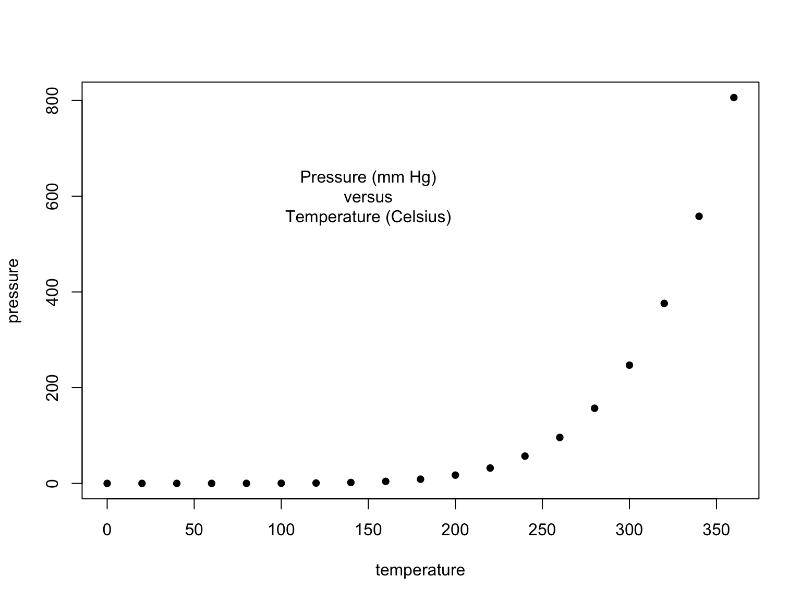
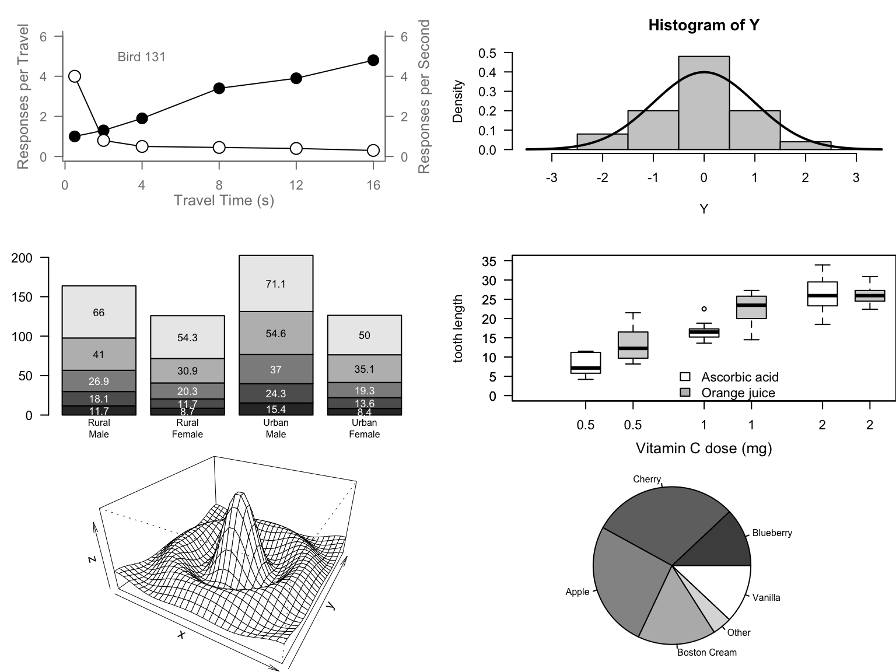
source("murrell01.R")

I chose the boxplot. The comments explain how each part contributes to the finished chart.
# Boxplot
# Set margins
par(mar=c(3, 4.1, 2, 0))
# VC boxplots
boxplot(len ~ dose, data=ToothGrowth,
boxwex=0.25, at=1:3 - 0.2,
subset=supp == "VC", col="white",
xlab="",
ylab="Tooth Length", ylim=c(0,35))
# Add x-axis label
mtext("Vitamin C dose (mg)", side=1, line=2.5, cex=0.8)
# Add OJ boxplots
boxplot(len ~ dose, data=ToothGrowth, add=TRUE,
boxwex=0.25, at=1:3 + 0.2,
subset=supp == "OJ")
# Add legend
legend(1.5, 9, c("Ascorbic acid", "Orange juice"),
fill=c("white", "gray"),
bty="n")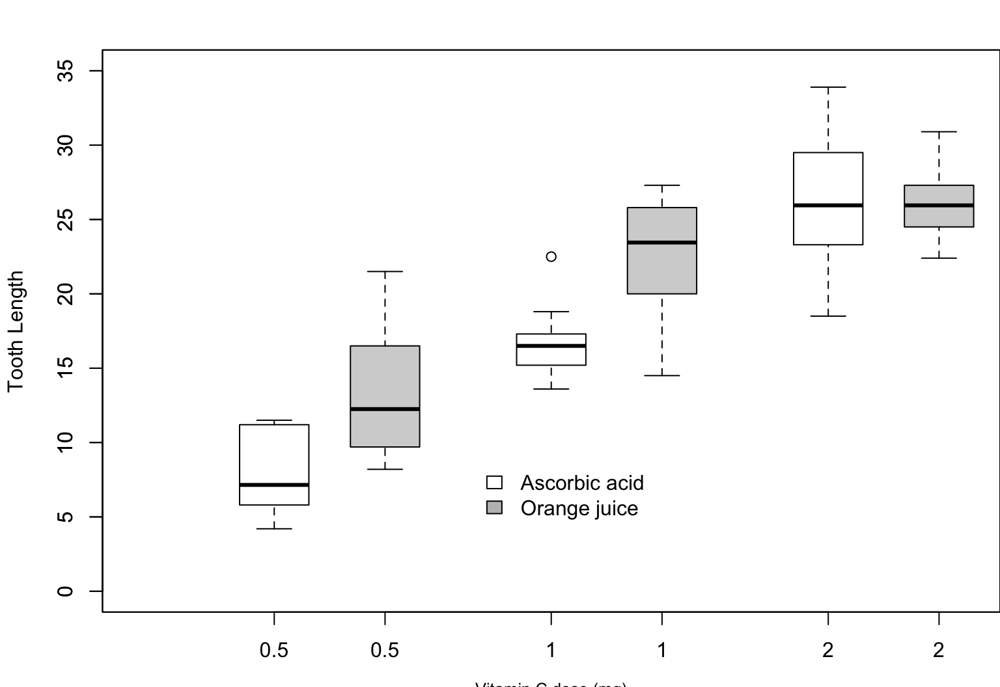
# Reset margins
par(mar=c(5.1, 4.1, 4.1, 2.1))# Run anscombe01.R without opening the RStudio data viewer
local({
View <- function(...) invisible(NULL)
source("anscombe01.R", local=environment())
})## Anscombe (1973) Quartet
data(anscombe)
summary(anscombe) x1 x2 x3 x4 y1
Min. : 4.0 Min. : 4.0 Min. : 4.0 Min. : 8 Min. : 4.260
1st Qu.: 6.5 1st Qu.: 6.5 1st Qu.: 6.5 1st Qu.: 8 1st Qu.: 6.315
Median : 9.0 Median : 9.0 Median : 9.0 Median : 8 Median : 7.580
Mean : 9.0 Mean : 9.0 Mean : 9.0 Mean : 9 Mean : 7.501
3rd Qu.:11.5 3rd Qu.:11.5 3rd Qu.:11.5 3rd Qu.: 8 3rd Qu.: 8.570
Max. :14.0 Max. :14.0 Max. :14.0 Max. :19 Max. :10.840
y2 y3 y4
Min. :3.100 Min. : 5.39 Min. : 5.250
1st Qu.:6.695 1st Qu.: 6.25 1st Qu.: 6.170
Median :8.140 Median : 7.11 Median : 7.040
Mean :7.501 Mean : 7.50 Mean : 7.501
3rd Qu.:8.950 3rd Qu.: 7.98 3rd Qu.: 8.190
Max. :9.260 Max. :12.74 Max. :12.500 ## Fit all four models
lm1 <- lm(y1 ~ x1, data=anscombe)
lm2 <- lm(y2 ~ x2, data=anscombe)
lm3 <- lm(y3 ~ x3, data=anscombe)
lm4 <- lm(y4 ~ x4, data=anscombe)plot(anscombe$x1, anscombe$y1)
abline(coefficients(lm1))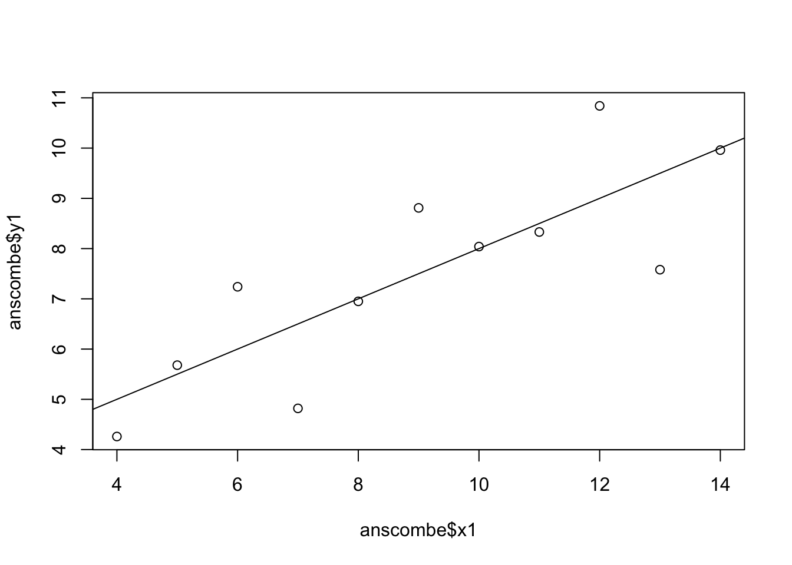
plot(anscombe$x2, anscombe$y2)
abline(coefficients(lm2))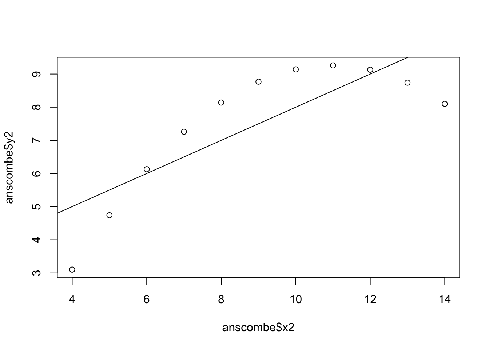
plot(anscombe$x3, anscombe$y3)
abline(coefficients(lm3))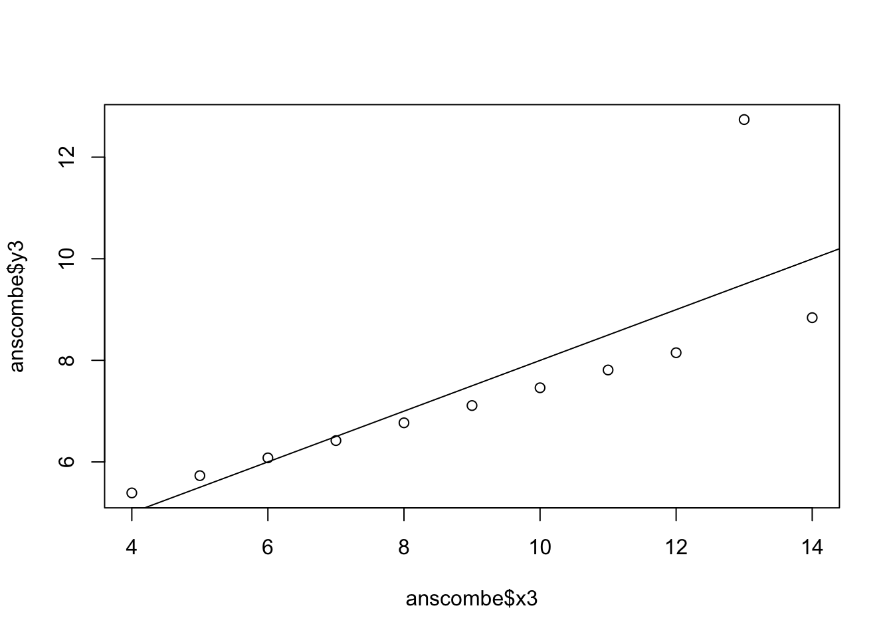
plot(anscombe$x4, anscombe$y4)
abline(coefficients(lm4))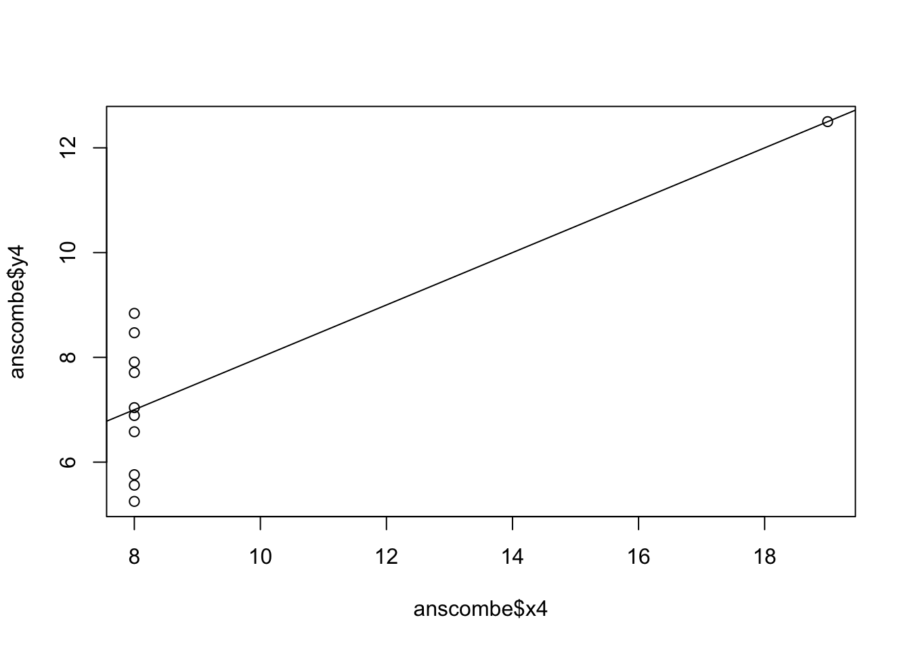
par(mfrow=c(2,2))
plot(anscombe$x1, anscombe$y1,
col="red", pch=21, bg="orange",
xlim=c(3,19), ylim=c(3,13),
main="Anscombe I")
abline(lm1, col="blue")
plot(anscombe$x2, anscombe$y2,
col="red", pch=21, bg="orange",
xlim=c(3,19), ylim=c(3,13),
main="Anscombe II")
abline(lm2, col="blue")
plot(anscombe$x3, anscombe$y3,
col="red", pch=21, bg="orange",
xlim=c(3,19), ylim=c(3,13),
main="Anscombe III")
abline(lm3, col="blue")
plot(anscombe$x4, anscombe$y4,
col="red", pch=21, bg="orange",
xlim=c(3,19), ylim=c(3,13),
main="Anscombe IV")
abline(lm4, col="blue")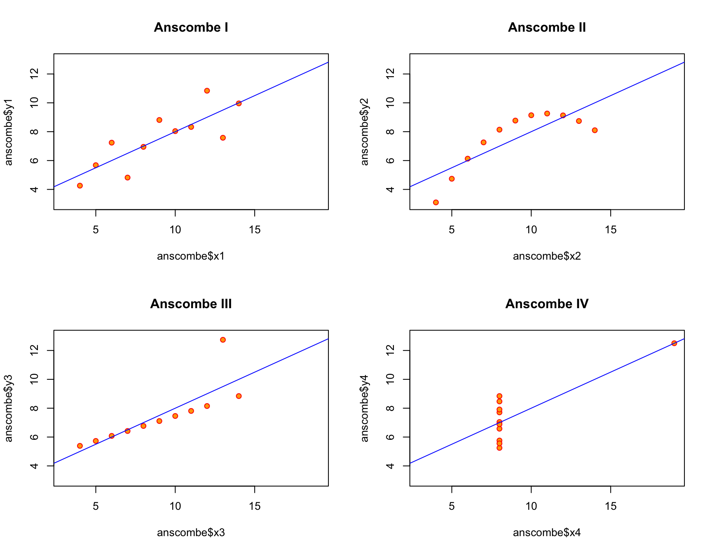
par(mfrow=c(1,1))results <- data.frame(
Model=c("Model 1", "Model 2", "Model 3", "Model 4"),
Intercept=c(coef(lm1)[1],
coef(lm2)[1],
coef(lm3)[1],
coef(lm4)[1]),
Slope=c(coef(lm1)[2],
coef(lm2)[2],
coef(lm3)[2],
coef(lm4)[2]),
R_Squared=c(summary(lm1)$r.squared,
summary(lm2)$r.squared,
summary(lm3)$r.squared,
summary(lm4)$r.squared),
Residual_SE=c(summary(lm1)$sigma,
summary(lm2)$sigma,
summary(lm3)$sigma,
summary(lm4)$sigma)
)
rownames(results) <- NULL
results[, -1] <- round(results[, -1], 3)
knitr::kable(results,
format="html",
caption="Comparison of Anscombe's Four Regression Models",
align="c")| Model | Intercept | Slope | R_Squared | Residual_SE |
|---|---|---|---|---|
| Model 1 | 3.000 | 0.5 | 0.667 | 1.237 |
| Model 2 | 3.001 | 0.5 | 0.666 | 1.237 |
| Model 3 | 3.002 | 0.5 | 0.666 | 1.236 |
| Model 4 | 3.002 | 0.5 | 0.667 | 1.236 |
The four regression models have almost identical results. Each model has an intercept around 3.00, a slope around 0.50, an R-squared value around 0.67, and a residual standard error around 1.24. Based only on these statistics, the four datasets look almost the same.
par(mfrow=c(2,2))
plot(anscombe$x1, anscombe$y1,
col="deeppink",
pch=16,
main="Anscombe I")
abline(lm1, col="navy", lty=1, lwd=2)
plot(anscombe$x2, anscombe$y2,
col="darkgreen",
pch=17,
main="Anscombe II")
abline(lm2, col="purple", lty=2, lwd=2)
plot(anscombe$x3, anscombe$y3,
col="darkorange",
pch=15,
main="Anscombe III")
abline(lm3, col="darkred", lty=3, lwd=2)
plot(anscombe$x4, anscombe$y4,
col="steelblue",
pch=18,
main="Anscombe IV")
abline(lm4, col="gray40", lty=4, lwd=2)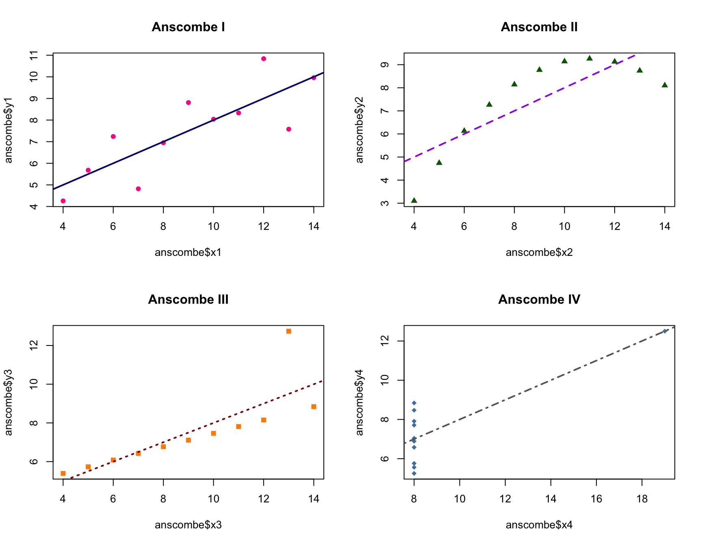
par(mfrow=c(1,1))Although the four datasets have almost identical regression statistics, their plots show very different relationships. Anscombe I has a mostly linear relationship. Anscombe II has a curved pattern. Anscombe III is mostly linear but has an influential outlier. Anscombe IV has most of the observations around the same x-value with one point strongly affecting the regression line. The summary statistics hide these differences in shape, outliers, and influential observations.
par(family="serif")
col="deeppink" and col="darkblue"
pch=18
par(mfrow=c(1,1))
# Serif font
par(family="serif")
# Pressure plot
plot(pressure,
pch=18,
col="deeppink",
main="Pressure versus Temperature",
xlab="Temperature (Celsius)",
ylab="Pressure (mm Hg)")
# Add text
text(150, 600,
"Pressure (mm Hg)\nversus\nTemperature (Celsius)",
col="darkblue",
family="serif")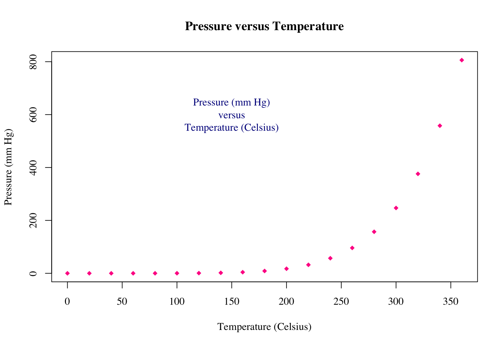
library(tidyverse)
# Convert pressure to data frame
df <- as.data.frame(pressure)
# Create ggplot
ggplot(df, aes(x=temperature, y=pressure)) +
geom_point(shape=18,
color="deeppink",
size=2.5) +
annotate("text",
x=150,
y=600,
label="Pressure (mm Hg)\nversus\nTemperature (Celsius)",
color="darkblue",
family="serif") +
labs(title="Pressure versus Temperature",
x="Temperature (Celsius)",
y="Pressure (mm Hg)") +
theme_minimal(base_family="serif")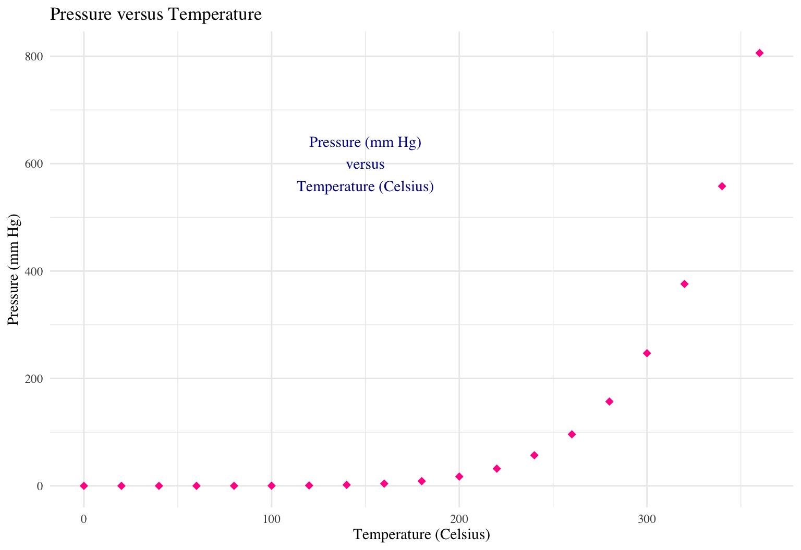
In base R, I used par(family="serif") for the font. In ggplot2, this became theme_minimal(base_family="serif").
The base R plotting character pch=18 became shape=18 in geom_point(). The base R point colour col="deeppink" became color="deeppink".
I did not need to use a scale_*() function because the colours and plotting characters were assigned directly instead of being mapped to a variable. If they were mapped to categories, I could use functions such as scale_color_manual() or scale_shape_manual().
The base R arguments main, xlab, and ylab became the title, x, and y arguments in labs().
The base R text() function became annotate("text", ...) in ggplot2.
There is not one exact ggplot2 replacement for par(). In ggplot2, those settings are handled through theme(), geoms, scales, and other plot settings.
The goal of this task is to replicate the Daily COVID Deaths in Europe chart using the Our World in Data dataset.
# Daily COVID counts, Our World in Data
url <- paste0(
"https://raw.githubusercontent.com/owid/covid-19-data/",
"master/public/data/owid-covid-data.csv"
)
# Download data
download.file(url, "owid-covid-data.csv")
# Read data
owidall <- read.csv("owid-covid-data.csv")
# Remove OWID aggregate rows
owidall <- owidall[!grepl("^OWID", owidall$iso_code), ]
# Keep Europe only
owideu <- subset(owidall, continent == "Europe")# Convert date column to Date
owideu$date <- as.Date(owideu$date)
# Keep dates shown in target chart
eu_plot <- subset(
owideu,
date >= as.Date("2020-01-01") &
date <= as.Date("2023-08-31") &
!is.na(new_deaths)
)
# Set margins and serif font
par(mar=c(7, 6, 2, 2), family="serif")
# Create scatterplot
plot(
eu_plot$date,
eu_plot$new_deaths,
pch=16,
cex=0.45,
col="deeppink",
xaxt="n",
xlab="",
ylab="COVID Deaths in Europe (Daily)",
ylim=c(-200, 6700)
)
# Create dates for x-axis
date_ticks <- seq(
as.Date("2020-01-01"),
as.Date("2023-08-01"),
by="2 months"
)
# Add rotated date labels
axis(
1,
at=date_ticks,
labels=format(date_ticks, "%Y-%m"),
las=2,
cex.axis=0.7
)
# Add x-axis title
mtext("Date", side=1, line=5)
# Find high points
label_data <- subset(
eu_plot,
new_deaths >= 5000 &
new_deaths <= 6500
)
# Sort highest to lowest
label_data <- label_data[
order(label_data$new_deaths, decreasing=TRUE),
]
# Keep one high point per country
label_data <- label_data[
!duplicated(label_data$location),
]
# Keep highest eight countries
label_data <- head(label_data, 8)
# Label high points by country
text(
label_data$date,
label_data$new_deaths,
labels=label_data$location,
pos=3,
cex=0.7
)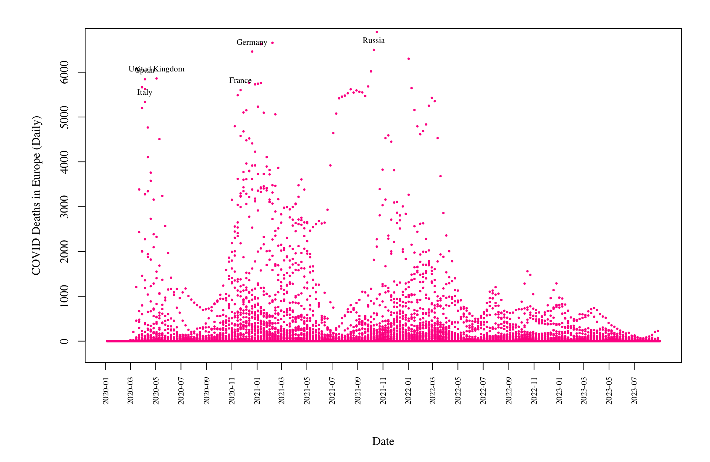
# Reset margins
par(mar=c(5.1, 4.1, 4.1, 2.1))The date column is converted into R’s Date format so that it can be plotted correctly on the x-axis. The data is limited to observations from January 2020 through August 2023, and observations with missing daily death values are removed.
The bottom margin is increased to make room for the rotated date labels. I used a serif font and deeppink points to match the target chart. The default x-axis is removed with xaxt="n" so that I could create date labels every two months and rotate them vertically.
Finally, I selected the high points in the visible range of the chart, kept the highest observation for each country, and used text() to label those observations by country. The labels are placed directly next to the observations instead of being displayed as a legend.
AI Disclaimer: I used ChatGPT as a tutor to clarify instructions, troubleshoot errors, and better understand mistakes encountered during the process. It also assisted with wording and formatting; however, the final submission reflects my own work and judgment.